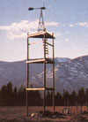
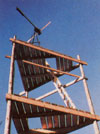

Folks drove by my place v-e-r-y s-l-o-w-l-y while my latest project was under construction . . . staring and wondering-no doubt-just what in the world I was building. And when anyone came right out and asked me about the structure, I couldn't resist perpetuating the mystery just a bit: I'd point at the odd triangular assemblage of lumber and say, "Why, that's going to be the skinniest hay barn in the county!"
Alas, however, all good spoofs must end, and one day I was forced to reveal the project's true purpose by installing a wind generator atop the uppermost platform of my wooden whatchamacallit. My neighbors realized then (I hope) that I wasn't totally wacky . . . in fact, you might say I was crazy like a fox.
You see, my local utility company had quoted an awesome figure when I asked how much it would cost to run conventional electrical service to my northern Idaho farm. So I decided, instead, to try a do-it-myself approach . . . and bought a 12-volt, 200-watt Wincharger.
The machine, I knew, would be able to provide me with enough current for lighting and a few other basic conveniences . . . but I was also aware that the little 10-foot tower that came with the unit wouldn't be adequate. Most experts recommend placing a windplant at least 15 feet higher than anything else within 400 feet of it . . . and suggest that-even on a level, unobstructed site-the installation height should be a mini mum of 40 feet.
I realized, therefore, that I'd need a taller support . . . but frankly, I wasn't excited about any of the more obvious options available to me. The tall steel-framework models that resemble radio transmission towers are very expensive, and the somewhat lowerpriced metal-pole-and-platform types-the ones that look as if they belong at either end of a circus tightrope-require a fairly complicated network of guy wires for support. Some folks simply top a live tree and mount the windplant on it, but even that method requires tiedown cables for reinforcement . . . and besides, the site I'd chosen for my generator was in the middle of a treeless alfalfa field.
In short, I realized that I wanted an inexpensive freestanding tower . . . and after some thought, I decided that a long-legged pole building would fill the bill.
To begin my project, I downed three tamarack trees and cut each one to measure 35 feet from its (approximately) 9 "-diameter butt to its 5" top. Then I peeled off the bark with a drawknife . . . covered the last 24" of the lamer end of each denuded pole with plastic roofing cement . . . and followed that treatment by wrapping the coated portions in black polyethylene trash bags, to further moistureproof the timbers.
With my uprights prepared, I laid out a 10' X 10' X 10' equilateral triangle on the spot where the tower would stand, and-at each corner-dug a hole 2 feet in diameter and 4-1/2 feet deep. (This was definitely the toughest part of the entire project, thanks to the fact that-below a thin layer of topsoil-my field was situated over some of the nastiest hardpan clay I've ever encountered.)
Finally, I poured a 6"-thick layer of concrete (I used a mixture of one part cement, two parts sand, and three parts gravel) into the bottom of each cavity, and-as the foundation pads dried-made preparations for the poleraising itself: I hauled in several cubic yards of sand and gravel for backfill material, piled a bunch of bracing boards nearby, bought a halfcase of beer, and invited several stout-hearted, strong-backed friends over to help.
Relying upon sheer animal ferocity-and no small amount of muscle-we hoisted the initial pole upright, butt end down, into one of the holes. We then plumbed the post, using a 2-foot level and the old eyeball method . . . and-while a few of us held the tree in place-backfilled the cavity.
Next, we "puddled" the conglomerate . . . that is, we sloshed a stream of water from a hose onto the sand and gravel so that the material settled. Then we added more grit, doused it again, and repeated this process until the compacted fill was flush with ground level and holding the pole tight.
As a couple of stalwart souls supported the first post (just in case), the remainder of us heaved the second member into place, backfilled its hole, and nailed a couple of boards between the two uprights to serve as braces. Then we put up the third post in the same manner. In all, the job took close to an hour from start to finish.
Next, working about 10 feet above the ground (I stood on the nailed bracing boards to reach that height), I leveled, spiked, and bolted three 2 X 8's to the outsides of the poles. Within the resulting triangle I framed in two joists . . . and nailed parallel 2 X 8's on top of them for decking, leaving a big enough opening in the middle to accommodate a ladder.
I built two more such platforms, each 10 feet farther up the poles . . . and on the topmost "loft" I assembled my Wincharger, complete with its own 10-foot tower. Then I drove an 8-foot length of 3/4" galvanized pipe deep into the soil at the base of my "hay barn", and ran No. 4 copper wire from it to the metal tower to serve as a ground against lightning. Finally, I made all the necessary electrical connections from the wind generator to the battery bank in my house . . . and at that moment I became the proud owner, operator, and sole user of the Reuben Ellis Electric Company!
The cost of my tower-thanks to the fact that I cut my own poles-was just under $50 (not including, of course, either the generator itself or the wiring). And if you could locate used lumber (for the decking) and/or free fill material (I had to buy my sand and gravel), even that low figure would be reduced.
However, should you be planning a similar project, do remember that "high-altitude" construction involves some very real dangers, and therefore requires common-sense safety measures. When you're working "up, up, and away", you should (at the very least) tie a short length of sturdy rope from your waist to the tower, or-better yet-use appropriate rock-climbing gear to guard against accidental falls. In any case, be careful at all times!
In conclusion, there's no question that my "skinny hay barn" has been well worth the small amount of time and money I invested in it. The tower, which overlooks my garden, really helps keep my Wincharger in the wind . . . and the lower platform makes a great place to take a break on a hot day. As I sit there enjoying the view (and the breeze), the blades overhead whoosh rhythmically, sending current flowing to my storage batteries and-at the same time-renewing my own sense of power with the knowledge that I'm capable of determining my own destiny, of doing for myself.
|
 |
 |
|